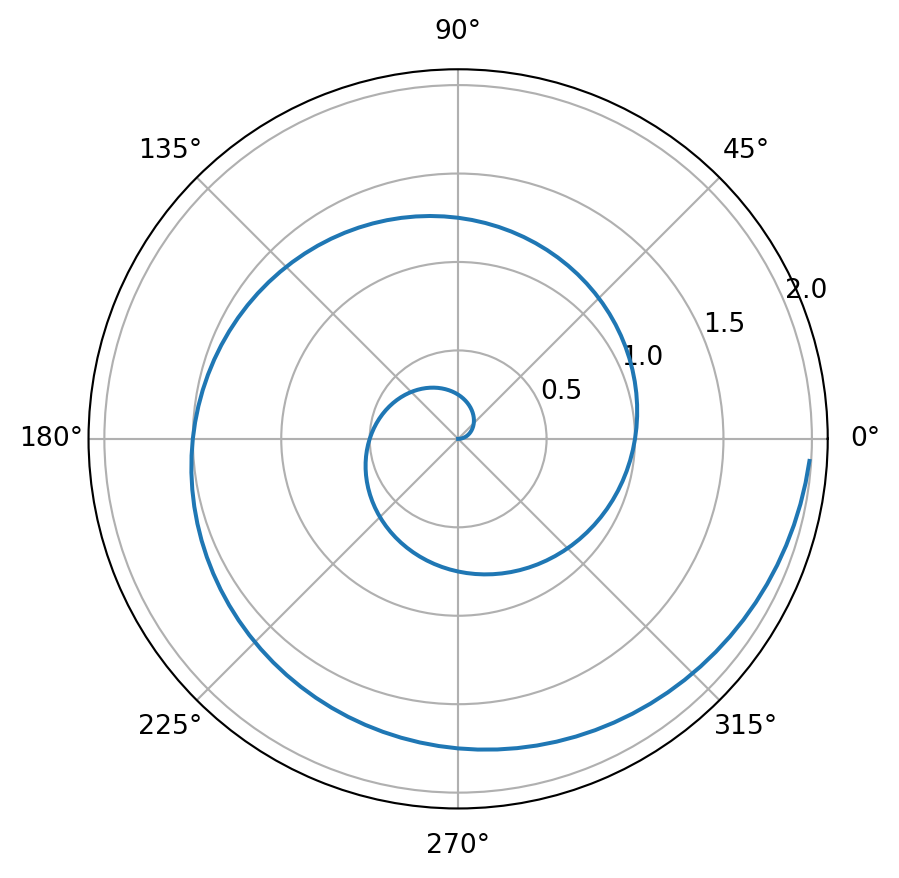

Lab: Markdown
ACTL3143 & ACTL5111 Deep Learning for Actuaries
That lab looks at how to incorporate Markdown and LaTeX into your Google Colab notebooks. The purpose of this part of the lab is to enhance how you annotate your code. With LaTeX, you can include equations into your notebooks.
Markdown
Markdown is a lightweight markup language that you can use to add formatting elements to plaintext text documents. It is widely used in the academic and technical communities for its simplicity and versatility. Markdown is easy to read and write, and it can be converted to HTML, PDF, and other formats.
Unfortunately there isn’t one standard Markdown syntax, but the most common one is GitHub Flavored Markdown. This is the syntax that Google Colab uses.
Headers
You can create headers by using the # symbol. The number of # symbols you use will determine the size of the header. For example, # Header 1 will create a large header, while ## Header 2 will create a smaller header.
Lists
You can create bulleted lists by using the - symbol. For example:
- Item 1
- Item 2
- Item 3- Item 1
- Item 2
- Item 3
You can also create numbered lists by using numbers followed by periods. For example:
1. Item 1
2. Item 2
3. Item 3- Item 1
- Item 2
- Item 3
Emphasis
You can create emphasis by using the * or the _ symbol.
- For example,
*italic*will create italic text, while**bold**will create bold text. - Equivalently,
_italic_will create italic text, while__bold__will create bold text.
Links
You can create links by using the [text](url) syntax. For example, [Google](https://www.google.com) will create a link to Google.
Images
You can include images by using the  syntax. For example,  will display the Google logo:

Code
You can include code snippets by using the backtick symbol (`). For example, `print("Hello, World!")` will display print("Hello, World!").
You can also create code blocks by using three backticks. For example:
```python print(“Hello, World!”) ```
will display:
print("Hello, World!")Tables
You can create tables by using the | symbol to separate columns and - symbols to separate the header row from the content rows. For example:
| Header 1 | Header 2 | Header 3 |
|----------|----------|----------|
| Row 1, Col 1 | Row 1, Col 2 | Row 1, Col 3 |
| Row 2, Col 1 | Row 2, Col 2 | Row 2, Col 3 |will display:
| Header 1 | Header 2 | Header 3 |
|---|---|---|
| Row 1, Col 1 | Row 1, Col 2 | Row 1, Col 3 |
| Row 2, Col 1 | Row 2, Col 2 | Row 2, Col 3 |
LaTeX
You can include LaTeX equations in your Markdown documents.
LaTeX is a typesetting system commonly used in research and other technical fields. It enables users to create high-quality documents with professional-looking mathematical and scientific equations, figures, and tables.
LaTeX has the ability to do all of the things that Markdown can do, and more. However, LaTeX has a steeper learning curve than Markdown, and it is not as widely used outside of academia and technical fields. Nowadays, its unique selling point is its mathematical typesetting capabilities — which is why Markdown’s equations use LaTeX syntax.
For full LaTeX documents, you can install a desktop-based distribution such as MikTeX, or online using Overleaf. However, in this lab we will just be looking at how you can incorporate LaTeX into Google Colab.
Inline equations and display mode
There are two ways you can incorporate LaTeX equations: either by using the $$ notation or by using the \[\] notation.
By wrapping your equation in one dollar sign ($), you can write mathematical expressions in-line. For example, $E = mc^2$ becomes E = mc^2.
By wrapping your equation in two dollar signs ($$), you can write mathematical expressions in “display mode”, which puts expressions on a standalone line: $$a^2 + b^2 = c^2.$$ becomes
a^2 + b^2 = c^2.
You can also create mathematical expressions in display mode by wrapping your expression in \[ and ]\ symbols. However, this does not seem to work in Google Colab for now, so we recommend using the dollar sign notation instead.
Mathematical notation
Use braces {} if there are multiple terms in the exponent: $x^{a+b}$ becomes x^{a+b}.
Inside a math environment, superscripts are denoted with (^) and subscripts denoted with (_). For example, $a^b$ and $a_b$ become a^b and a_b respectively.
There are many mathematical symbols that can be called upon using the backslash followed by the name of the symbol, including Greek symbols.
$\alpha, \beta, \gamma, \delta, \pi, \Pi, \phi, \Phi$
\alpha, \beta, \gamma, \delta, \pi, \Pi, \phi, \Phi
There are far too many to list, and you can find a comprehensive list at The Comprehensive LaTeX Symbol List - The CTAN archive
LaTeX has an equivalent of ‘functions’ (commands) which also start with backslash but take one or more arguments in braces. For example, take the following equation for the area of a circle:
\text{Area of Circle} = \pi r^2
This equation is represented by the following LaTeX code:
$$\text{Area of Circle} = \pi r^2$$The \text{} command converts the text in the expression from italicised to non-italicised.
Other commands include \frac{}{} (which requires two arguments), \sqrt{}, and \partial:
$$\frac{\partial}{\partial x} = \sqrt{x}$$\frac{\partial}{\partial x} = \sqrt{x}
Matrices
For matrices with square brackets (braces), use \begin{bmatrix} \end{bmatrix}
$$B = \begin{bmatrix}
a & b & c \\
d & e & f \\
g & h & i
\end{bmatrix}$$B = \begin{bmatrix} a & b & c \\ d & e & f \\ g & h & i \end{bmatrix}
For matrices with parentheses, use \begin{pmatrix} \end{pmatrix}
$$\sigma^2 = \begin{pmatrix}
\sigma_1^2 & \sigma_{12} \\
\sigma_{12} & \sigma_2^2
\end{pmatrix}$$\sigma^2 = \begin{pmatrix} \sigma_1^2 & \sigma_{12} \\ \sigma_{12} & \sigma_2^2 \end{pmatrix}
General matrix notation (notice the cdots, vdots, and ddots) :
$A_{m,n} =
\begin{pmatrix}
a_{1,1} & a_{1,2} & \cdots & a_{1,n} \\
a_{2,1} & a_{2,2} & \cdots & a_{2,n} \\
\vdots & \vdots & \ddots & \vdots \\
a_{m,1} & a_{m,2} & \cdots & a_{m,n}
\end{pmatrix}$A_{m,n} = \begin{pmatrix} a_{1,1} & a_{1,2} & \cdots & a_{1,n} \\ a_{2,1} & a_{2,2} & \cdots & a_{2,n} \\ \vdots & \vdots & \ddots & \vdots \\ a_{m,1} & a_{m,2} & \cdots & a_{m,n} \end{pmatrix}
Examples from last week’s Lab
$\boldsymbol{z=Xw+b}$produces \boldsymbol{z=Xw+b},- Softmax function:
$\sigma(z_{i}) = \frac{e^{z_i}}{\sum_{j=1}^K e^{z_j}}$produces \sigma(z_{i}) = \frac{\mathrm{e}^{z_i}}{\sum_{j=1}^K \mathrm{e}^{z_j}}.
RMarkdown and Quarto
The Jupyter Notebook experience separates code cells from Markdown cells. It is more convenient for experimenting with code, and tasks where there is more coding than there is writing. However, for tasks where there is more writing than coding, it is more convenient to use RMarkdown or Quarto.
RMarkdown is a variant of Markdown that allows you to include R code chunks in your document. It runs the R code and includes the output in the document. It has been around for many years, and I recommend watching Rob Hyndman’s presentation on how he uses RMarkdown for nearly all his writing tasks.
Quarto is a newer improvement on RMarkdown that supports Python, R, and many other programming languages, and improves upon RMarkdown in a number of ways.
To create a code chunk which will be executed, you can use the following syntax:
```{python}
#| label: fig-polar
#| fig-cap: "A line plot on a polar axis"
import numpy as np
import matplotlib.pyplot as plt
r = np.arange(0, 2, 0.01)
theta = 2 * np.pi * r
fig, ax = plt.subplots(
subplot_kw = {'projection': 'polar'}
)
ax.plot(theta, r)
ax.set_rticks([0.5, 1, 1.5, 2])
ax.grid(True)
plt.show()
```This produces:
Quarto is the software I used to make this website, the lecture slides, my personal website (https://laub.au/) and much more. While I don’t particularly recommend you use Quarto for your assignments, I do recommend you use it for your personal projects.
Acknowledgements
Thanks to Sam Luo & Eric Dong who contributed to the LaTeX section of the lab.
I used GitHub Copilot to draft the earlier Markdown demonstrations.